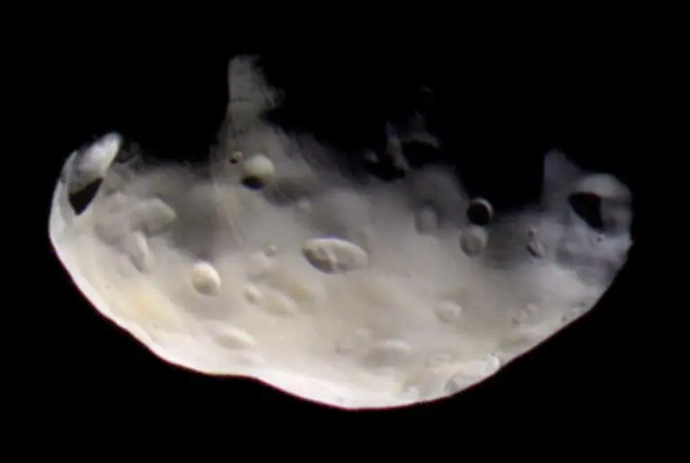
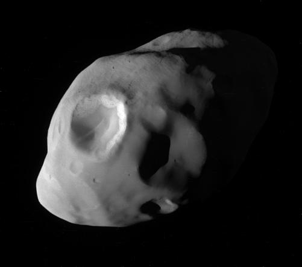

Домашняя страница команды Cassini imaging team находится по адресу.
Пандора — естественный спутник Сатурна, также называемый Сатурн XVII. Впервые он был обнаружен по фотографиям, полученных с «Вояджер-1», Стюартом Коллинзом и другими в октябре 1980 года (44 года назад).
Пандора совершает полный оборот вокруг Сатурна на расстоянии в среднем 141 700 км за 15,1 часа. Он имеет неправильную вытянутую форму, диаметр примерно 114 * 88 * 62 километра (70 * 55 * 38 миль), на поверхности присутствует два заметных ударных крупных кратера с диаметром около 30 километров (19 миль). Никаких линейных долин или хребтов не обнаружено. На поверхности луны довольно холодно: -195°C (78°K).
Орбита луны Сатурна неустойчива и к тому же входит в резонанс с орбитой другого спутника планеты – Прометея. Эта луна интересна тем, что своим гравитационным влиянием способена вызывать разрушение кольца F, в то время как Прометей помогает удерживать кольцо на месте.

одним снимков спутника Сатурна Пандоры в самом высоком разрешении.
Домашняя страница команды Cassini imaging team находится по адресу.
Первоначально называвшаяся S/1980 S26, луна Сатурна была переименована в 1985 году в Пандору, в честь мифологического персонажа фольклора древней Греции.
Пандора в древнегреческой мифологии – первая женщина, которая была создана богами в наказание людям за похищение огня. До появления Пандоры женщины были только богинями. Однако, из-за событий, указанных ранее, женщина появилась и на Земле. Любопытная, она открыла подаренный Зевсом сосуд (ящик Пандоры), из которого тут же по миру разлетелись все несчастья и бедствия, а на дне, под захлопнутой крышкой, осталась одна лишь надежда.

ВНИМЕНИЕ! На работе не соблюдены масштабы и расположения небесных тел.